Galata and Beyoğlu are where old Istanbul meets the new: Genoese towers, 19th-century passages, contemporary art museums and the city's best street life. Here is what we tell our guests not to miss.
Sightseeing & walks
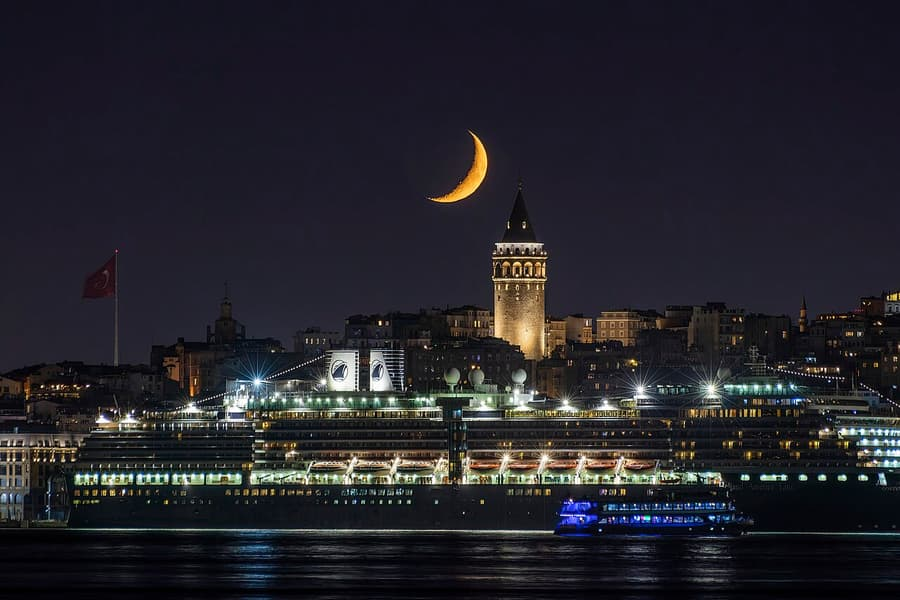
Galata Tower
Built by the Genoese in 1348 — the best views of Istanbul are from the top.
📍 Open in Google Maps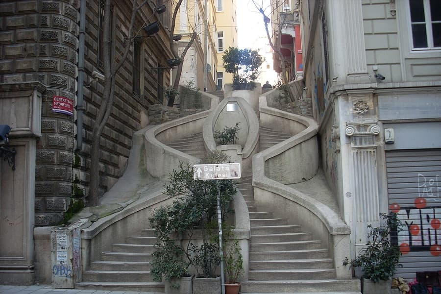
Camondo Stairs
A unique 19th-century architectural gem linking Galata and Karaköy.
📍 Open in Google Maps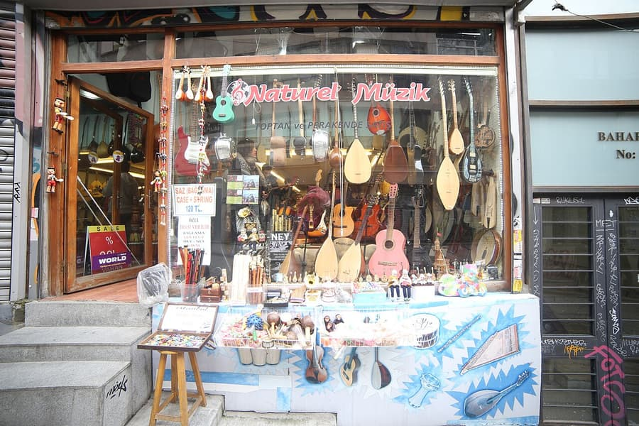
Galip Dede Caddesi
Historic music shops and colourful façades on the way from Tünel to the Tower.
📍 Open in Google Maps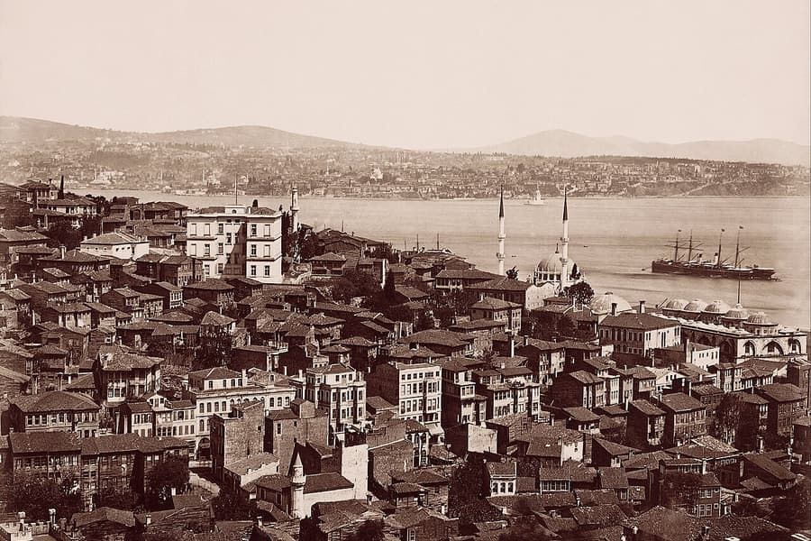
Boğazkesen Caddesi
Street art and old buildings.
📍 Open in Google Maps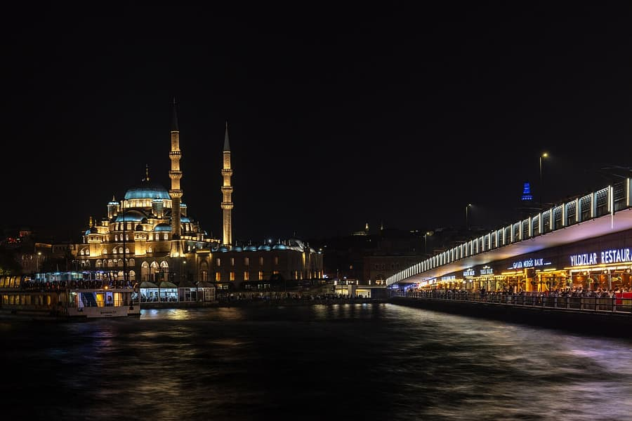
Galata Bridge
Fishermen, colours and the sea breeze — walk across to the Old City.
📍 Open in Google MapsMuseums, art & history
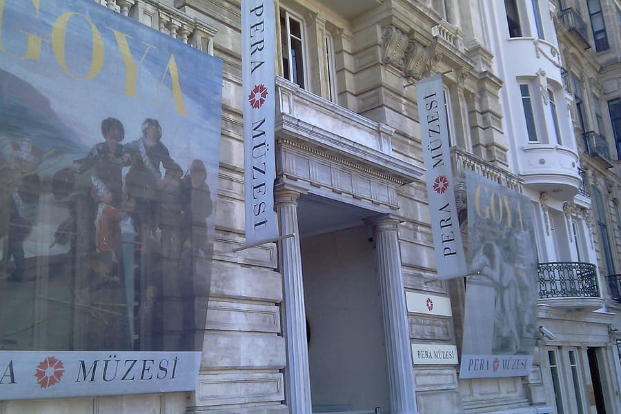
Pera Museum
A must-see permanent collection — including Osman Hamdi Bey's “The Tortoise Trainer” — and rotating exhibitions.
📍 Open in Google Maps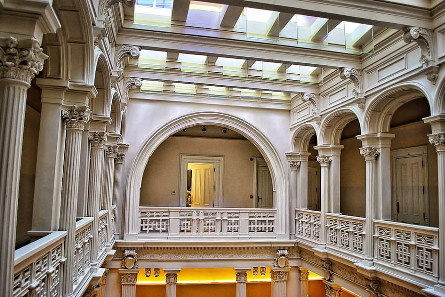
Salt Galata
Architecture, art and a peaceful atmosphere in a former Ottoman bank — with a great shop for rare books and magazines.
📍 Open in Google Maps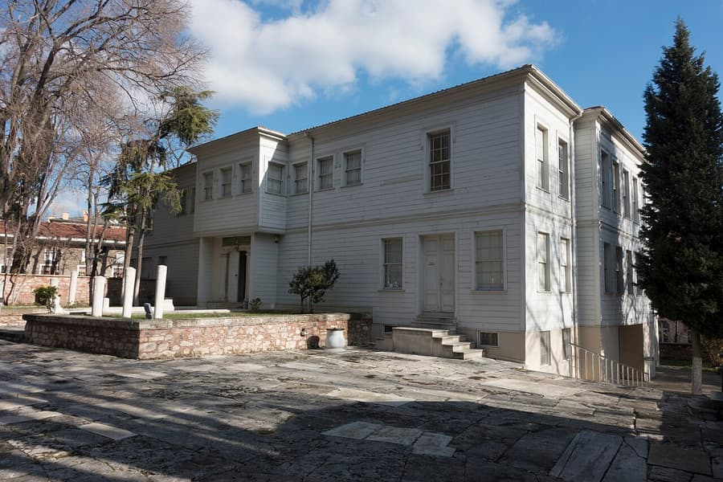
Galata Mevlevi Lodge
Experience Sufi culture and the whirling dervishes.
📍 Open in Google Maps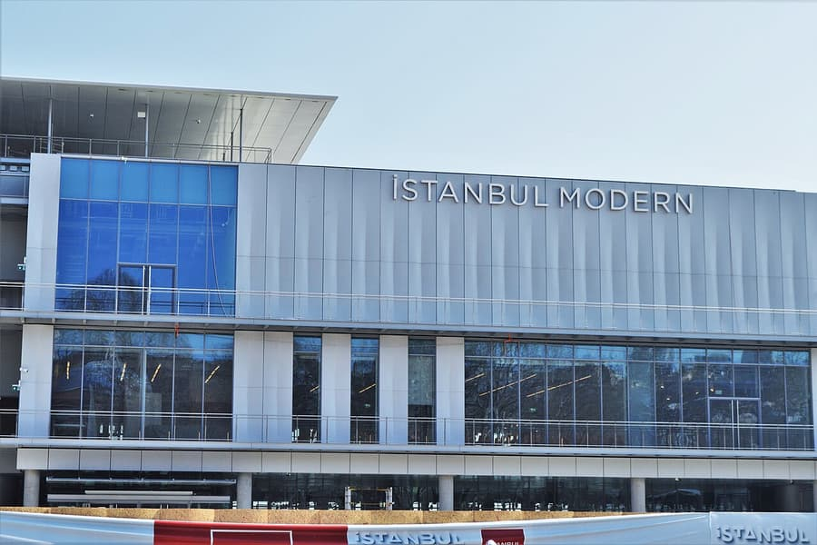
Istanbul Modern
Turkish contemporary art in a striking new waterfront building in Karaköy.
📍 Open in Google Maps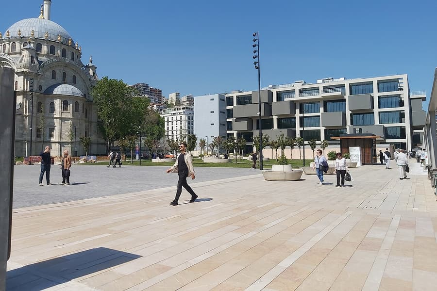
Istanbul Museum of Painting and Sculpture
A unique museum — Turkey's first museum of painting and sculpture.
📍 Open in Google Maps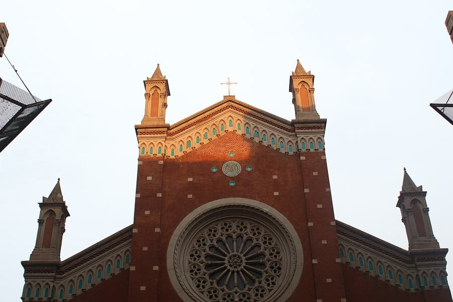
Church of St. Anthony of Padua
Istanbul's largest Catholic church, a neo-Gothic landmark on İstiklal Avenue completed in 1912.
📍 Open in Google MapsGalatasaray Hamamı
One of the oldest Turkish baths in the city, dating back to 1481.
📍 Open in Google Maps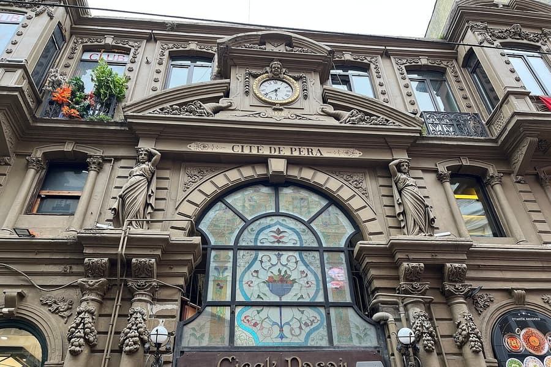
Çiçek Pasajı
The 1876 “Cité de Péra” arcade on İstiklal, today lined with meyhanes.
📍 Open in Google MapsShopping & local design
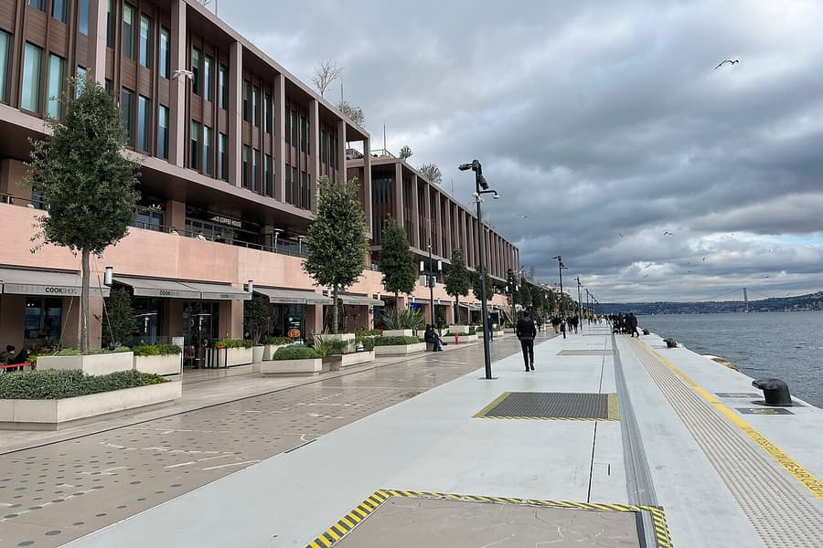
Galataport Istanbul
The new waterfront in Karaköy: cruise port, cafés, restaurants, boutique shops and Istanbul Modern.
📍 Open in Google Maps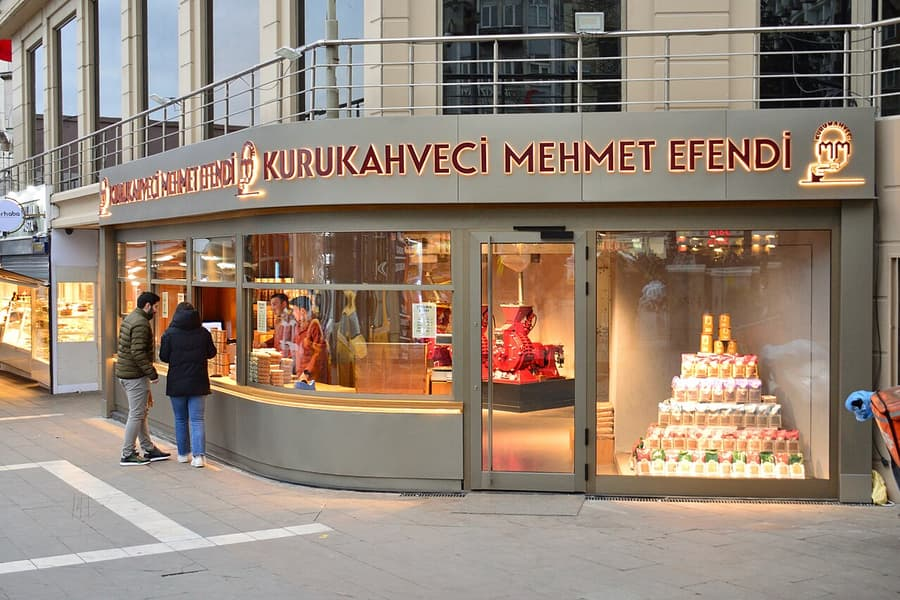
Kurukahveci Mehmet Efendi
The oldest and most authentic place to buy Turkish coffee. Expect a queue — it is a shop, not a café.
📍 Open in Google MapsBeyond Beyoğlu: the Old City
The T1 tram from Karaköy takes you to Sultanahmet in about 15 minutes.
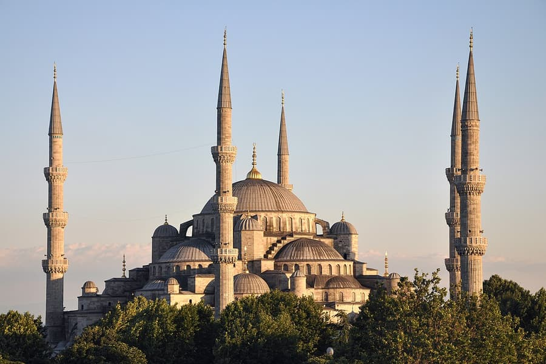
Blue Mosque
Its architecture is a synthesis of the Ottoman mosque tradition and Byzantine church design.
📍 Open in Google Maps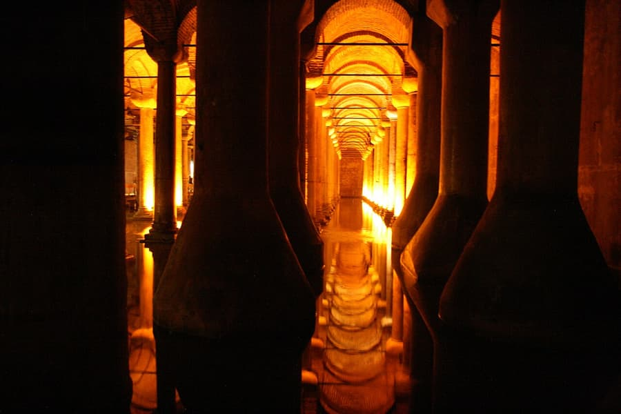
Basilica Cistern
A vast underground cistern built by Emperor Justinian in the 6th century, known for its marble columns rising from the water.
📍 Open in Google Maps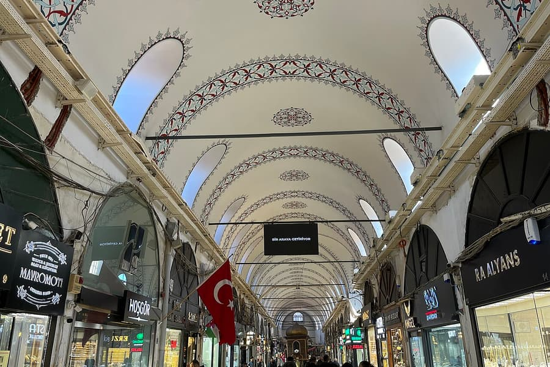
Grand Bazaar
Home to Istanbul's finest artisans and jewellers — definitely worth a visit. Tram stop: Beyazıt–Kapalıçarşı.
📍 Open in Google Maps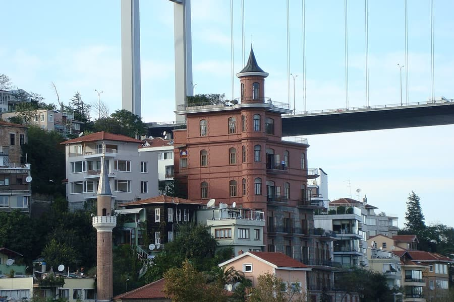
Borusan Contemporary
Digital art in a waterfront mansion on the Bosphorus (open at weekends).
📍 Open in Google MapsStay in the heart of Galata
Our apartments in Galata, Taksim and Beyoğlu are a short walk from everything in this guide. Book direct and pay 10% less than on Airbnb.